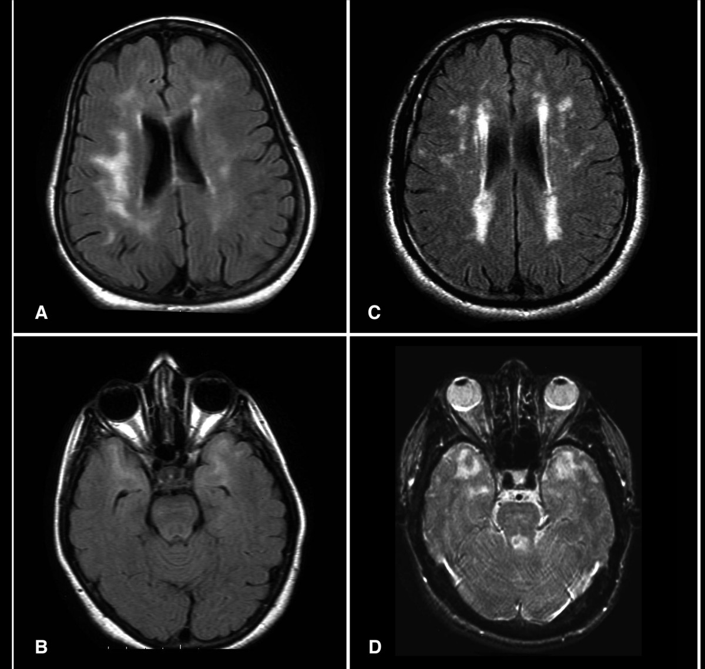

Vignette 25 a: por que é EM
Mulher de 25 anos, parestesia e desequilíbrio. Tempo + espaço na clínica e na RM de crânio — e uma questão com cinco alternativas para eliminar.
Vignette 25 a
Mulher jovem, 25 anos, em home office na pandemia (cadeira da mesa da cozinha por vários meses). Queixa de parestesia (dormência) em membros inferiores bilaterais, duração de uma semana, com melhora espontânea → crise sensitiva. Após três meses (intervalo ≥1 mês), reaparece a queixa associada a desequilíbrio.
Tempo + espaço na clínica e na RM
Há doença disseminada no tempo (dois momentos com intervalo) e no espaço (sensitivo + desequilíbrio / possível cerebelo). RM de crânio: corte sagital com região posterior do ventrículo lateral e múltiplas lesões desmielinizantes brancas de substância branca. Tempo + espaço na clínica e na RM de crânio → esclerose múltipla (resposta letra C na questão apresentada).
Por que caem os distratores
Mesmo “chutando” entre B e C, o perfil jovem + sensitivo + desequilíbrio + lesões periventriculares cranianas fecha C = EM.
| Alternativa | Por que cai |
|---|---|
| Hérnia lombar (A) | Exigiria raciocínio/imagem de coluna lombar — não é o que a RM de crânio mostra |
| ELA (B) | Doença puramente motora de idoso — perfil demográfico e sindrômico completamente diferente |
| Tumor medular cervical (D) | Exigiria RM de coluna cervical |
| Linfoma cervical (E) | Não se sustenta na RM de crânio com lesões de SB disseminadas |
| EM (C) | Tempo + espaço + RM crânio |
Retorno a Jaqueline
Fechamento do caso-âncora: jovem com múltiplas manifestações neurológicas centrais, incluindo o olho → diagnóstico provável = esclerose múltipla.
Resumo operacional: RM de crânio com SB disseminada + tempo clínico = EM; distratores pedem a coluna errada ou o perfil errado.

Tartaglia N, Davis S, Hench A, et al. Am J Med Genet A 2008 · domínio público (NIH) · Wikimedia Commons

A imagem que fecha
Os focos periventriculares em FLAIR são lesões de substância branca disseminadas no SNC. Com tempo clínico (dois momentos, intervalo ≥1 mês), fecham EM — e descartam os distratores de coluna.
Tratar o surto e estratificar atividade.
Quiz
Q1. Na vignette, a resposta EM se sustenta porque:
Gabarito: B. Tempo (dois momentos, ≥1 mês) + espaço (sensitivo + desequilíbrio) + RM de crânio com lesões desmielinizantes.
(A) a cadeira é contexto, não prova hérnia. (C) é jovem e sensitiva. (D) há dois surtos, não um de minutos.
Q2. Hérnia lombar cai como distrator porque:
Gabarito: B. Hérnia lombar exigiria RM de coluna lombar; a questão mostra RM de crânio com SB disseminada.
(A) hérnia não faz lesões periventriculares. (C) não é causa cerebelar. (D) Uhthoff é outra coisa.
Q3. ELA cai porque:
Gabarito: B. ELA é puramente motora e de idoso — o oposto da vignette (jovem, sensitiva, com desequilíbrio).
(A) não é a mesma doença. (C)(D) BOC e papilite não são da ELA.